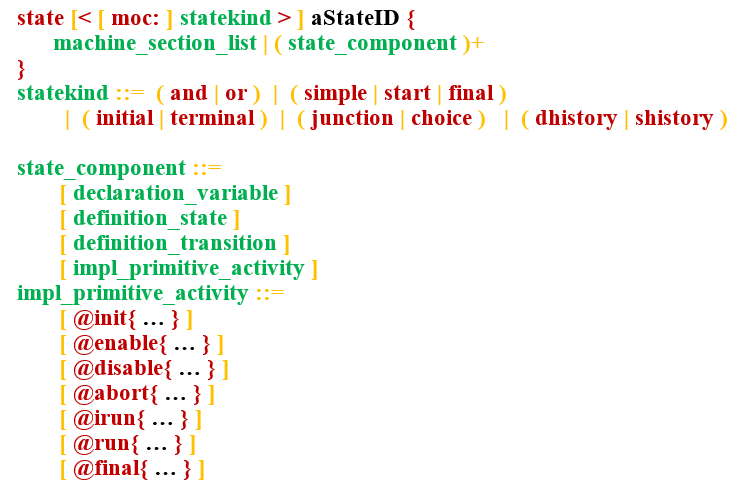
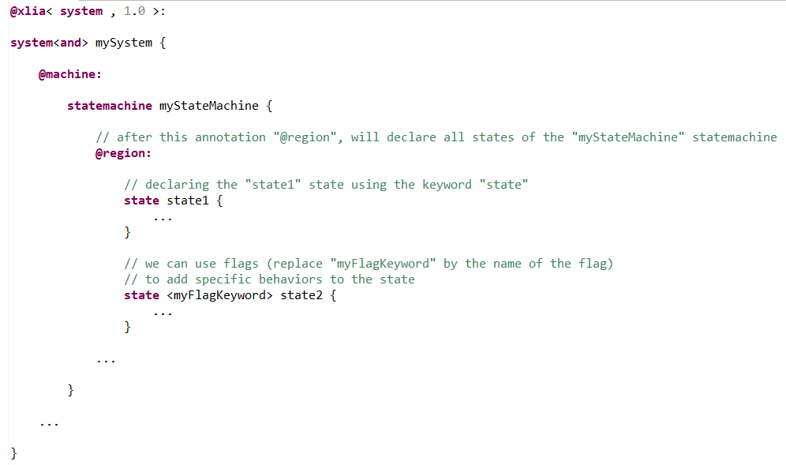

Machine type : state
In XLIA, the lower-level machines that make up the "states" in which the state-machines can find themselves are modeled by "state" machines.
In other words, the "state" component is a particular machine, specialized to model in a simplified way the states, be they basic or composite, of a "statemachine" machine.
One of the difference, as we'll see, with "statemachine" syntax lies in the possibility of omitting the name of sections.
Declaring states
The general syntax to declare a state is the following (see BNF syntax) :

There are many variations and different uses, some very specific, a short overview would be :
- the "statekind" argument may contain a flag keyword, specifying a specific behavior for the state : see here.
- in the body of the state, we can find any number of :
- variable declarations
- sub-state declarations in the case of a composite state (see here)
- transition declarations in the case of NON-composite state
- activity primitive implementation, the most commonly used in states being listed on the picture above
Basic state behaviors
The main keyword to use is "state". Here is a basic declaration within an xlia file :

We can specify a certain behavior for the state with flags as shown above. According to their behaviors, we can separate states into three main factions :
Basic States
A basic state is the only kind of state in which a "statemachine" ("or" moc) can be after a computation step (i.e. evaluation or initialization step).
A basic state does not contain any sub-states.
Pseudo States
Pseudo states are unstable states in which a "state-machines" cannot stay after a computation step.
A pseudo state does not contain any sub-states.
Composite States
A composite state has sub-states. Those can be either basic states and pseudo states. A composite state has no direct notion of being a simple or a pseudo state. The parent statemachine is considered to be in the current sub-state of the composite state.
A state will be a composite state if we declare other states within its body. However, we also need to specify a flag for the inner concurrency of the sub-states.
Quick overview of the flag keywords
In this part, we'll have a quick overview of the most common flags per category.
Common 'Basic State' flags :
- "simple" : this is the most basic 'Basic State'. If no flag is specified and no sub-state is defined in the state body, by default, the declared state is a "simple" state.
- "start" : it indicates that the parent state-machine must be in this state at the initial time when running the simulation. See this part of the documentation or this part of the tutorial for further details. See also the 'initial' pseudo state flag ("start" can be considered to be "simple" plus "initial").
- "final" : it indicates that this state (which must not have any outgoing transitions) is final : the execution of the parent/container machine ends when reaching this state.
Common 'Pseudo State' flags :
- "initial" : each state-machine must have one and only one "initial" (or "start") state. It is the state on which it is when the simulation starts. See this part of the documentation or this part of the tutorial for further details.
- "choice" : this unstable state is resolved by going into one of it's possible targets after evaluation of diverse constraints or/and conditions. See this example.
- "terminal" : such a state ends the evaluation of its container statemachine. It has no outgoing transition.
- "junction" : TODO TODO TODO TODO TODO TODO TODO TODO TODO TODO TODO TODO TODO TODO TODO TODO TODO TODO TODO TODO TODO
Composite state flag :
- "or" : the sub-states of the composite state are mutually exclusive
- "and" : the sub-states of the composite state are not mutually exclusive (for instance if the state is reached a first time, and then a second time before all the inner sub-states have finished)
Body of the state
States and what they do is mainly defined by what is written in their body. Unlike other machines, we don't declare state sub-components in sections introduced by a "@XXX:" keyword.
For the "state" type of machine, the most common components we can find in the body are :
- Generally speaking :
- declarations of objects of type "var" or "type" as attributes (local variables, constants...)
- specifications of "activity primitives". This is a very important feature, not only for states, but for all machines. In other machines, activity primitives are specified in the "@moe:" section. In states, as we don't use sections, they can be found directly in the body. See "activity primitives" for further details.
- If we use the state as a simple or pseudo state :
- we define the transitions from this state to itself or to other states directly in the body.
- If we use the state as a composite state :
- we declare sub-states directly in the body.
Uses of the state
As we've explained, machines of type "state" can be used to model several different things. In the links below, we'll give example and focus on specifics concerning those uses :